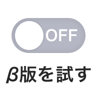

iii
読み上げ版ページへ
NHKラジオ らじる★らじる
札幌
仙台
東京
名古屋
大阪
広島
松山
福岡
ネットラジオ番組表
番組を探す
NEWS
ニュース聴き逃し
Multilingual News
MENU
ネットラジオ
番組表
番組を探す
聴き逃し
β版を試す
NEWS
ニュース聴き逃し
Multilingual News
閉じる
NHKラジオの新しい
トップページをお試しください
試してみる
あとで

ヘッダメニューからいつでも切り替えることができます。
ラジオ第1
LIVE
ラジオ第2
LIVE
NHK-FM
LIVE
INFO
聴き逃し♪
放送した番組を
お聴きいただけます
一覧
読むらじる。
一覧
「らじる★らじる」のお知らせ
お知らせをもっと見る
Prev
Next
ページトップへ